Deducción cooperativa
1812
Argentina
En 1812, el autor del libro escribió la verdadera historia de la creación de la bandera. Sin decir una palabra, guía a los Lectores con imágenes de ensueño. ¿Junto a quién la creó Manuel Belgrano? ¿Cómo se conocieron? ¿Dónde? ¿Qué comieron?
- 2–7 jugadores
- +8 años
- 20 min
- 5 niveles
19 €
ComprarEnvío dentro de Francia: 10 €.

Perfil del juego
¿Qué tipo de juego es?
Cuánto pesa cada ingrediente, de 1 a 5.
Complejidad
Ideal con
3–5 jugadores
Para
- Familias
- Escuelas
- Grupos grandes
Mecánicas
- Cooperativo
- Deducción
- Comunicación limitada
- Niveles de dificultad
Todos juntos
Autor y Lectores forman un equipo: ganan si descifran el código antes de que se acaben los turnos.
Prohibido hablar
El Autor solo puede ayudar entregando cartas. Nada de palabras ni gestos.
Sobres con aciertos
Cada intento recibe un sobre con la cantidad de cifras correctas, nunca cuáles.
1812
Cómo se juega
Roles
Un Autor y el resto Lectores. Cada fila tiene un Responsable, que decide si no hay acuerdo.
Preparación
Cuatro filas boca arriba: personajes, situaciones, lugares y comidas, en 5 o 6 columnas según el nivel. La caja-libro hace de pantalla.
El código secreto
El Autor tira los dados dentro de la caja: el color es la fila y el número, la columna.
Pensar en imágenes
El Autor toma seis cartas de Autor, elige cuatro y pone una junto a cada fila. Agua para la lavandera, un bol para el locro.
Debatir y decidir
Los Lectores ponen sus fichas, dicen el código en voz alta y el Autor entrega el sobre con la cantidad de aciertos.
Fin de la partida
Si descifran el código antes de que se acaben los turnos, ganan todos. Al final, el Autor cuenta la verdadera historia con las cuatro cartas.
Reglas que hacen la diferencia
La bandera
En los niveles que la permiten, el Autor puede descartar cartas y robar hasta tener seis. Para avisar, canta una estrofa del himno.
Reloj de arena
Para más presión, limitá el tiempo que tienen los Lectores para debatir.
Cinco niveles de dificultad
| Nivel | Columnas | Bandera | Turnos |
|---|---|---|---|
| 1 | 5 | Sí | 5 |
| 2 | 6 | Sí | 4 |
| 3 | 6 | Sí | 4 |
| 4 | 6 | No | 4 |
| 5 | 6 | No | 3 |
Las cartas de Lector
40 cartas, cuatro preguntas
Diez cartas por fila: personajes, situaciones, lugares y comidas de la época. En cada partida se ponen boca arriba cinco o seis de cada una, según el nivel.
Personajes¿Con quién?

El ama de llaves 
La vendedora de empanadas 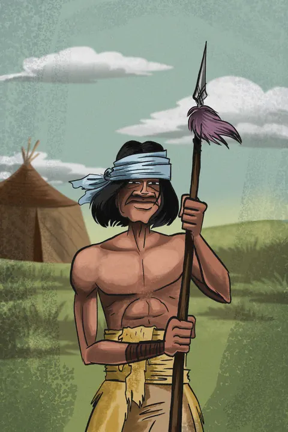
El cacique 
El granadero 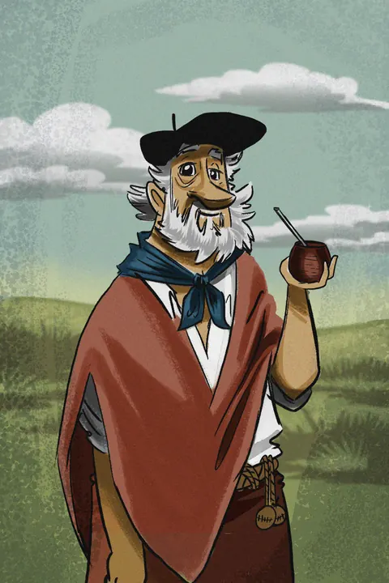
El gaucho 
El vendedor de velas 
El señor feudal 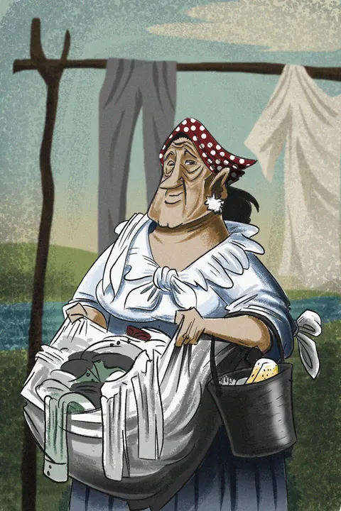
La lavandera 
La dama 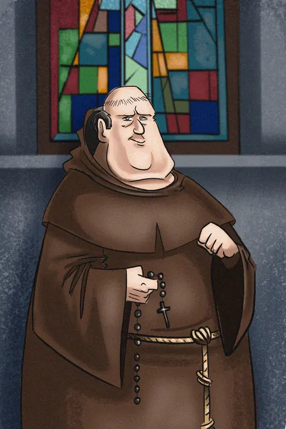
El fraile
Situaciones¿Cómo se conocieron?
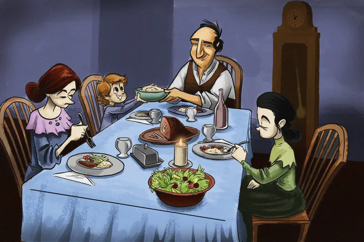
La cena 
El baile 
La llegada a Buenos Aires 
La imprenta 
La batalla 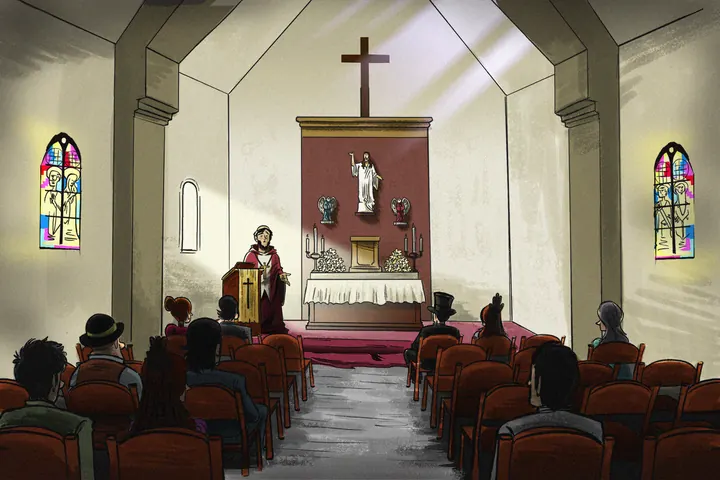
La misa 
La Manzana de las Luces 
El juego de cartas 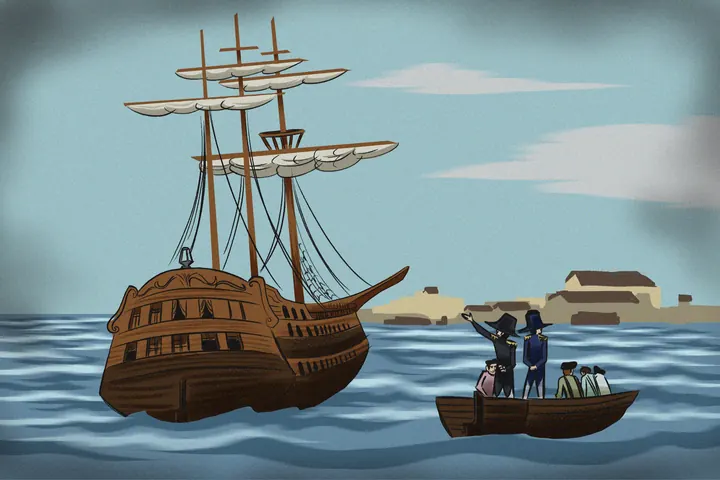
El desembarco 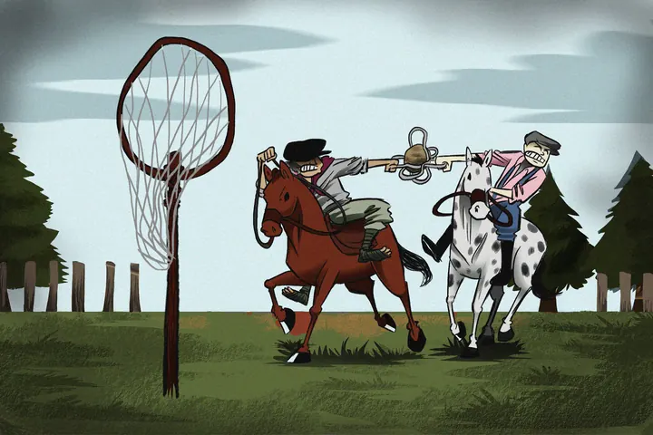
El pato
Lugares¿Dónde?

Rosario 
Las ruinas jesuíticas 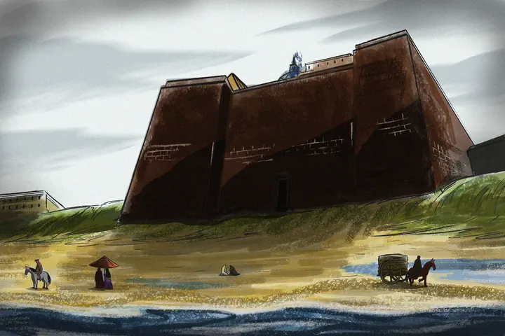
El fuerte de Buenos Aires 
El centro de Buenos Aires 
Las cataratas del Iguazú 
Los viñedos de Mendoza 
Luján 
Jujuy 
La Casa de Tucumán 
El Cabildo
Comidas¿Qué comieron?
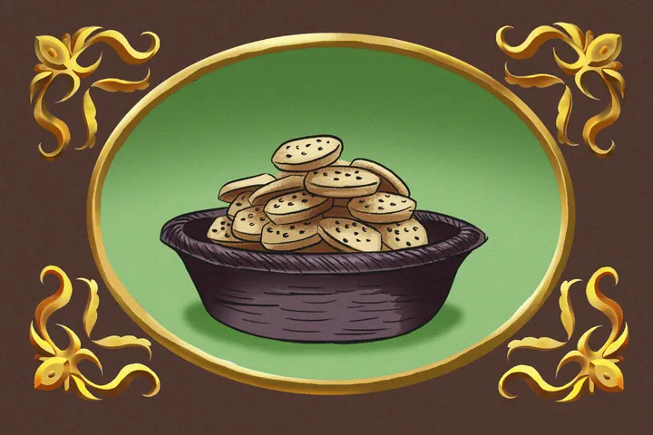
Los bizcochos 
El vino 
El mate 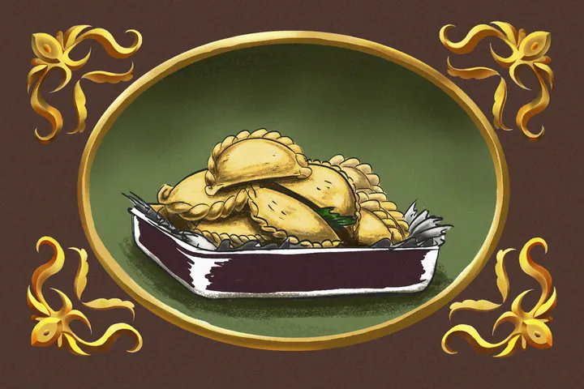
Las empanadas 
La carbonada 
Los pastelitos 
El pollo 
El asado 
La mazamorra 
El locro
Las cartas de Autor
60 imágenes de ensueño
Ninguna muestra algo de 1812. El Autor tiene que encontrar un detalle que lleve a la carta correcta: una forma, un color, un objeto. Y los Lectores, adivinar en qué estaba pensando.


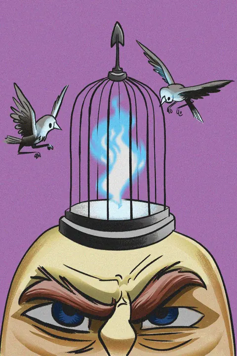
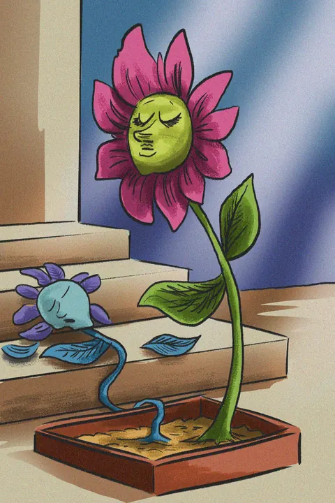


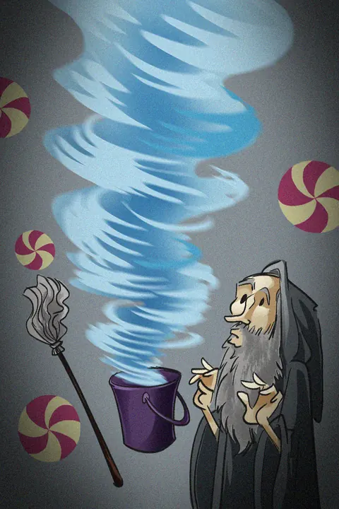
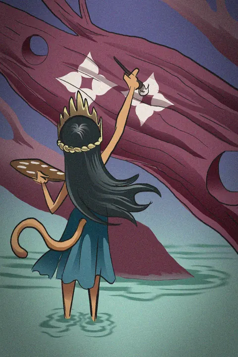
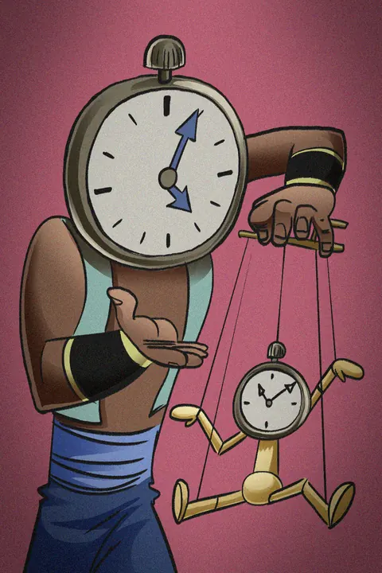

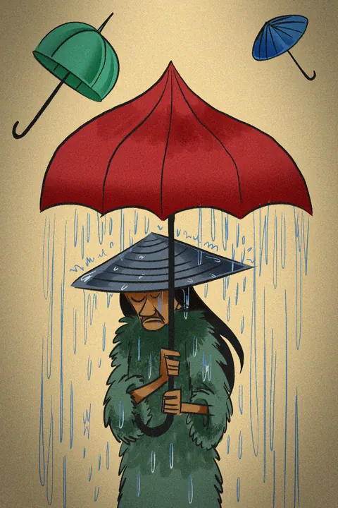
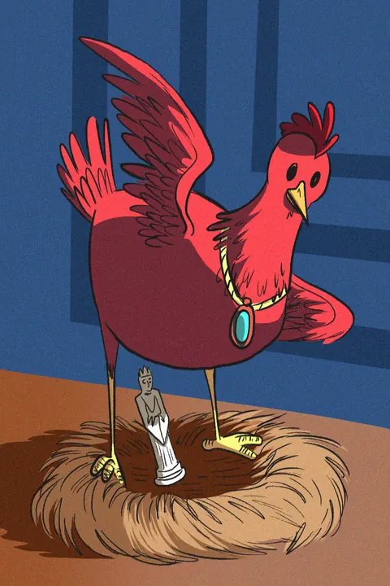

Probalo acá
Jugá una ronda como Lector
Cada partida trae una mesa distinta, en nivel 3. El Autor ya tiró los dados y dejó una carta al lado de cada fila. Elegí una carta por fila y decí el código: el sobre te va a decir cuántas cifras acertaste, pero no cuáles.
Una caja-libro llena de historia
Personajes, lugares, situaciones y comidas típicas de la época, ilustrados para descubrir jugando.


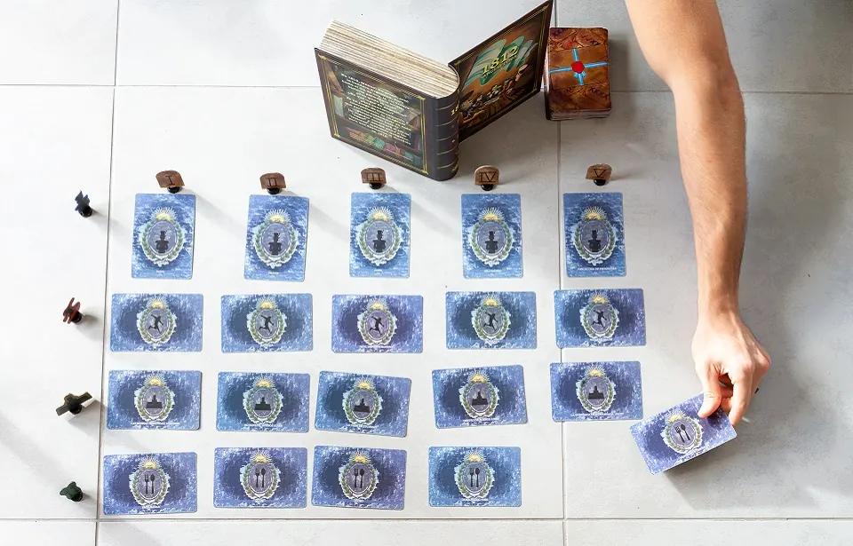
Qué hay en la caja
- 60 cartas de Autor
- 40 cartas de Lector: personajes, situaciones, lugares y comidas
- 4 dados de Autor
- 4 fichas de Lector
- 6 columnas
- 20 sobres
- 1 bandera
- 1 reloj de arena
Reglas y videos
Descargá el reglamento o mirá cómo se juega.
Créditos
- Autor · Diego Simonet
- Ilustración · Facundo Rodríguez Valsagna
- Diseño · Sol Dillon
- Información histórica · Pato Brown
1812 nació para jugarse en casa y en la escuela. Si querés llevarlo al aula, escribinos.
Otros juegos de DS4Games

Olympikos
¿Quién no soñó con unos Juegos Olímpicos? Adiviná el deporte antes que nadie y subite al podio.

Les Secrets de la Tour Eiffel
París, 1889. El Autor conoce el secreto de Gustave Eiffel, pero no puede decir una palabra.

2080
Año 2080. Todos dicen su código en voz alta, pero nadie sabe cuánto acertaron los demás.